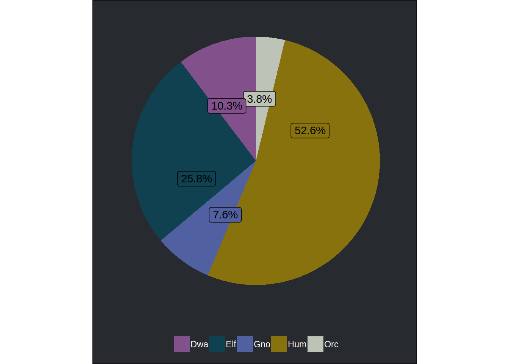
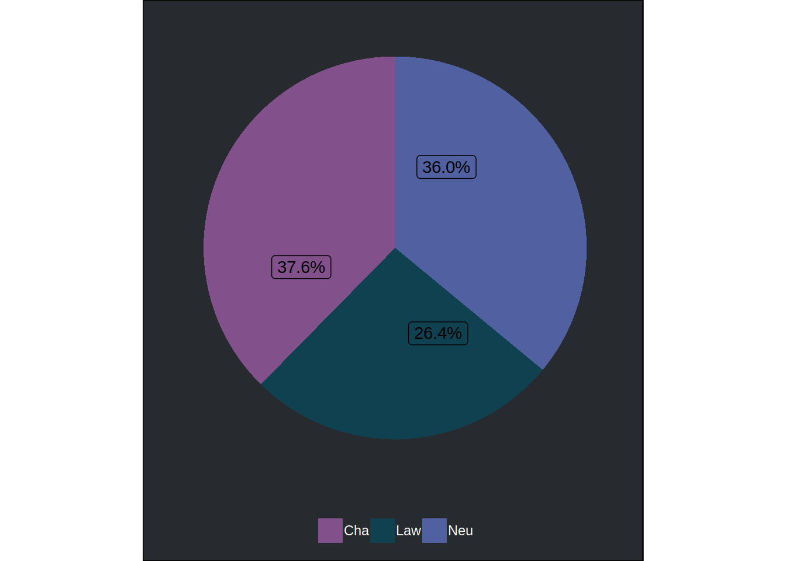
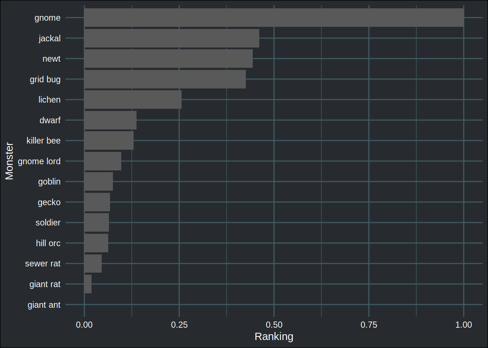
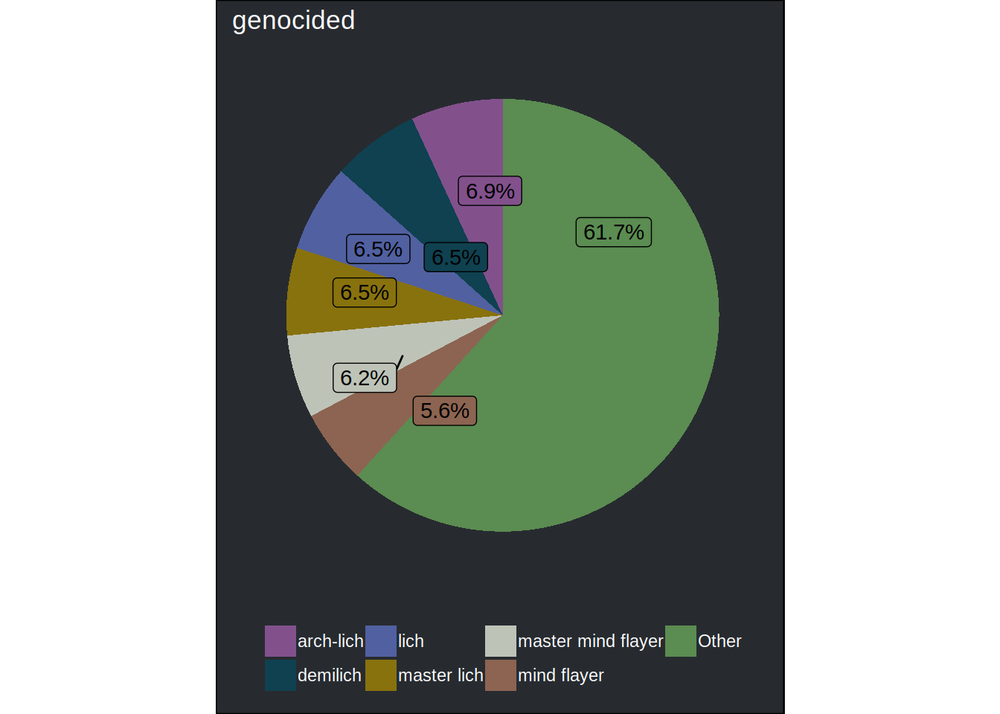
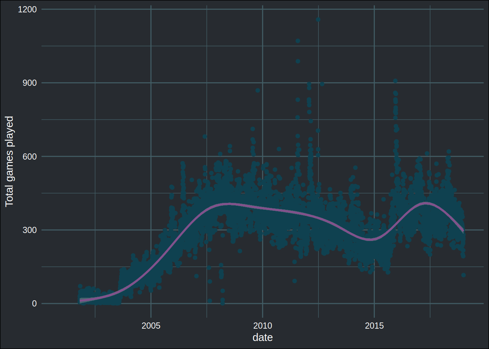

Analyzing NetHack data, part 2: What players kill the most
November 10, 2018Link to webscraping the data
Link to Analysis, part 1
Introduction
This is the third blog post that deals with data from the game NetHack, and oh boy, did a lot of things happen since the last blog post! Here’s a short timeline of the events:
- I scraped data from alt.org/nethack and made a package with the data available on Github (that package was too big for CRAN)
- Then, I analyzed the data, focusing on what monsters kill the players the most, and also where players die the most
- @GridSageGames, developer of the roguelike Cogmind and moderator of the roguelike subreddit, posted the blog post on reddit
- I noticed that actually, by scraping the data like I did, I only got a sample of 100 daily games
- This point was also discussed on Reddit, and bhhak, an UnNetHack developer (UnNetHack is a fork of NetHack) suggested I used the xlogfiles instead
- xlogfiles are log files generated by NetHack, and are also available on alt.org/nethack
- I started scraping them, and getting a lot more data
- I got contacted on twitter by @paxed, an admin of alt.org/nethack:
There was no need for scraping, we'll happily give out the whole database if you want.
— Pasi Kallinen (@paxed) November 5, 2018
- He gave me access to ALL THE DATA on alt.org/nethack!
- The admins of alt.org/nethack will release all the data to the public!
So, I will now continue with the blog post I wanted to do in the first place; focusing now on what
roles players choose to play the most, and also which monsters they kill the most. BUT! Since all the data
will be released to the public, my {nethack} package that contains data that I scraped is not
that useful anymore. So I changed the nature of the package.
Now the package contains some functions: a function to parse and prepare the xlogfiles from NetHack that
you can download from alt.org/nethack (or from any other public server), a function
to download dumplogs such as this one. These dumplogs contain a lot of
info that I will extract in this blog post, using another function included in the {nethack} package.
The package also contains a sample of 6000 runs from NetHack version 3.6.1.
You can install the package with the following command line:
devtools::install_github("b-rodrigues/nethack")The {nethack} package
In part 1 I showed what killed players the most. Here, I will focus on what monsters players kill the most. Let’s start by loading some packages:
library(tidyverse)
library(lubridate)
library(magrittr)
library(ggridges)
library(brotools)
library(rvest)
library(nethack)Let’s first describe the data:
brotools::describe(nethack) %>%
print(n = Inf)## # A tibble: 23 x 17
## variable type nobs mean sd mode min max q05
## <chr> <chr> <int> <dbl> <dbl> <chr> <dbl> <dbl> <dbl>
## 1 deathdn… Nume… 6.00e3 8.45e-1 1.30e+0 2 0. 7.00e0 0.
## 2 deathlev Nume… 6.00e3 4.32e+0 3.69e+0 10 -5.00e0 4.50e1 1.00e0
## 3 deaths Nume… 6.00e3 8.88e-1 3.54e-1 1 0. 5.00e0 0.
## 4 endtime Nume… 6.00e3 1.53e+9 4.72e+6 1534… 1.52e9 1.54e9 1.53e9
## 5 hp Nume… 6.00e3 6.64e+0 4.96e+1 -1 -9.40e1 1.79e3 -8.00e0
## 6 maxhp Nume… 6.00e3 3.82e+1 5.29e+1 57 2.00e0 1.80e3 1.10e1
## 7 maxlvl Nume… 6.00e3 5.52e+0 6.36e+0 10 1.00e0 5.30e1 1.00e0
## 8 points Nume… 6.00e3 4.69e+4 4.18e+5 10523 0. 9.92e6 1.40e1
## 9 realtime Nume… 6.00e3 4.42e+3 1.60e+4 4575 0. 3.23e5 6.90e1
## 10 startti… Nume… 6.00e3 1.53e+9 4.72e+6 1534… 1.52e9 1.54e9 1.53e9
## 11 turns Nume… 6.00e3 3.60e+3 9.12e+3 6797 3.10e1 1.97e5 9.49e1
## 12 align Char… 6.00e3 NA NA Cha NA NA NA
## 13 align0 Char… 6.00e3 NA NA Cha NA NA NA
## 14 death Char… 6.00e3 NA NA kill… NA NA NA
## 15 gender Char… 6.00e3 NA NA Fem NA NA NA
## 16 gender0 Char… 6.00e3 NA NA Fem NA NA NA
## 17 killed_… Char… 6.00e3 NA NA fain… NA NA NA
## 18 name Char… 6.00e3 NA NA drud… NA NA NA
## 19 race Char… 6.00e3 NA NA Elf NA NA NA
## 20 role Char… 6.00e3 NA NA Wiz NA NA NA
## 21 dumplog List 1.33e6 NA NA <NA> NA NA NA
## 22 birthda… Date 6.00e3 NA NA <NA> NA NA NA
## 23 deathda… Date 6.00e3 NA NA <NA> NA NA NA
## # ... with 8 more variables: q25 <dbl>, median <dbl>, q75 <dbl>,
## # q95 <dbl>, n_missing <int>, n_unique <int>, starting_date <date>,
## # ending_date <date>All these columns are included in xlogfiles. The data was prepared using two functions, included
in {nethack}:
xlog <- read_delim("~/path/to/nethack361_xlog.csv", "\t", escape_double = FALSE,
col_names = FALSE, trim_ws = TRUE)
xlog_df <- clean_xlog(xlog)nethack361_xlog.csv is the raw xlogfiles that you can get from NetHack public servers.
clean_xlog() is a function that parses an xlogfile and returns a clean data frame.
xlog_df will be a data frame that will look just as the one included in {nethack}. It is
then possible to get the dumplog from each run included in xlog_df using get_dumplog():
xlog_df <- get_dumplog(xlog_df)This function adds a column called dumplog with the dumplog of that run. I will now analyze
the dumplog file, by focusing on monsters vanquished, genocided or extinct. In a future blogpost
I will focus on other achievements.
Roles played (and other starting stats)
I will take a look at the races, roles, gender and alignment players start with the most. I will do pie charts to visualize these variable, so first, let’s start by writing a general function that allows me to do just that:
create_pie <- function(dataset, variable, repel = FALSE){
if(repel){
geom_label <- function(...){
ggrepel::geom_label_repel(...)
}
}
variable <- enquo(variable)
dataset %>%
count((!!variable)) %>%
mutate(total = sum(n),
freq = n/total,
labels = scales::percent(freq)) %>%
arrange(desc(freq)) %>%
ggplot(aes(x = "", y = freq, fill = (!!variable))) +
geom_col() +
geom_label(aes(label = labels), position = position_stack(vjust = 0.25), show.legend = FALSE) +
coord_polar("y") +
theme_blog() +
scale_fill_blog() +
theme(legend.title = element_blank(),
panel.grid = element_blank(),
axis.text = element_blank(),
axis.title = element_blank())
}Now I can easily plot the share of races chosen:
create_pie(nethack, race)
or the share of alignment:
create_pie(nethack, align0)
Same for the share of gender:
create_pie(nethack, gender0)
and finally for the share of roles:
create_pie(nethack, role, repel = TRUE) 
create_pie() is possible thanks to tidy evaluation in {ggplot2},
which makes it possible to write a function that passes data frame columns down to aes(). Before
version 3.0 of {ggplot2} this was not possible, and writing such a function would have been a bit
more complicated. Now, it’s as easy as pie, if I dare say.
Something else I want to look at, is the distribution of turns by role:
nethack %>%
filter(turns < quantile(turns, 0.98)) %>%
ggplot(aes(x = turns, y = role, group = role, fill = role)) +
geom_density_ridges(scale = 6, size = 0.25, rel_min_height = 0.01) +
theme_blog() +
scale_fill_blog() +
theme(axis.text.y = element_blank(),
axis.title.y = element_blank())## Picking joint bandwidth of 486
I use the very cool {ggridges} package for that. The distribution seems to mostly be the same
(of course, one should do a statistical test to be sure), but the one for the role “Valkyrie”
seems to be quite different from the others. It is known that it is easier to win the game playing
as a Valkyrie, but a question remains: is it really easier as a Valkyrie, or do good players tend
to play as Valkyries more often?
Creatures vanquished, genocided or extinct
The dumplog lists which, and how many of which, creatures were vanquished during the run, as well as creatures that were genocided and extinct. The player can genocide an entire species by reading a scroll of genocide (or by sitting on a throne). A species gets extinct if the player manages to kill every monster from that species (there’s other ways too, but for the sake of simplicity, let’s just say that when the players kills every monster from a species, the species is extinct). The following lines are an extract of a dumplog:
"Vanquished creatures:"
" Baalzebub"
" Orcus"
" Juiblex"
"the Wizard of Yendor (4 times)"
" Pestilence (thrice)"
" Famine"
" Vlad the Impaler"
" 4 arch-liches"
" an arch-lich"
" a high priest"
"..."
"..."
"..."
"2873 creatures vanquished." If I want to analyze this, I have to first solve some problems:
- Replace “a” and “an” by “1”
- Put the digit in the string “(4 times)” in front of the name of the monster (going from “the Wizard of Yendor (4 times)” to “4 the Wizard of Yendor”)
- Do something similar for “twice” and “thrice”
- Put everything into singular (for example, arch-liches into arch-lich)
- Trim whitespace
- Extract the genocided or extinct status from the dumplog too
- Finally, return a data frame with all the needed info
I wrote a function called extracted_defeated_monsters() and included it in the {nethack} package.
I discuss this function in appendix, but what it does is extracting information from dumplog files
about vanquished, genocided or extinct monsters and returns a tidy dataframe with that info. This
function has a lot of things going on inside it, so if you’re interested in learning more about
regular expression and other {tidyverse} tricks, I really encourage you to read its source code.
I can now easily add this info to my data:
nethack %<>%
mutate(monsters_destroyed = map(dumplog, ~possibly(extract_defeated_monsters, otherwise = NA)(.)))Let’s take a look at one of them:
nethack$monsters_destroyed[[117]]## # A tibble: 285 x 3
## value monster status
## <dbl> <chr> <chr>
## 1 1 baalzebub <NA>
## 2 1 orcu <NA>
## 3 1 juiblex <NA>
## 4 4 the wizard of yendor <NA>
## 5 3 pestilence <NA>
## 6 1 famine <NA>
## 7 1 vlad the impaler <NA>
## 8 4 arch-lich <NA>
## 9 1 high priest <NA>
## 10 1 medusa <NA>
## # ... with 275 more rowsnethack$monsters_destroyed[[117]] %>%
count(status)## # A tibble: 3 x 2
## status n
## <chr> <int>
## 1 extinct 2
## 2 genocided 7
## 3 <NA> 276The status variable tells us if that monster was genocided or extinct during that run. status
equal to “NA” means vanquished.
It is now possible to look at, say, the top 15 vanquished monsters (normalized):
nethack %>%
filter(!is.na(monsters_destroyed)) %>%
pull(monsters_destroyed) %>%
bind_rows %>%
group_by(monster) %>%
summarise(total = sum(value)) %>%
top_n(15) %>%
ungroup() %>%
mutate(norm_total = (total - min(total))/(max(total) - min(total))) %>%
mutate(monster = fct_reorder(monster, norm_total, .desc = FALSE)) %>%
ggplot() +
geom_col(aes(y = norm_total, x = monster)) +
coord_flip() +
theme_blog() +
scale_fill_blog() +
ylab("Ranking") +
xlab("Monster")## Selecting by total
In this type of graph, the most vanquished monster, “gnome” has a value of 1, and the least vanquished one, 0. This normalization step is also used in the pre-processing step of machine learning algorithms. This helps convergence of the gradient descent algorithm for instance.
Monsters can also get genocided or extinct. Let’s make a pie chart of the proportion of genocided and extinct monsters (I lump monsters that are genocided or extinct less than 5% of the times into a category called other). Because I want two pie charts, I nest the data after having grouped it by the status variable. This is a trick I discussed in this blog post and that I use very often:
nethack %>%
filter(!is.na(monsters_destroyed)) %>%
pull(monsters_destroyed) %>%
bind_rows %>%
filter(!is.na(status)) %>%
group_by(status) %>%
count(monster) %>%
mutate(monster = fct_lump(monster, prop = 0.05, w = n)) %>%
group_by(status, monster) %>%
summarise(total_count = sum(n)) %>%
mutate(freq = total_count/sum(total_count),
labels = scales::percent(freq)) %>%
arrange(desc(freq)) %>%
group_by(status) %>%
nest() %>%
mutate(pie_chart = map2(.x = status,
.y = data,
~ggplot(data = .y,
aes(x = "", y = freq, fill = (monster))) +
geom_col() +
ggrepel::geom_label_repel(aes(label = labels), position = position_stack(vjust = 0.25), show.legend = FALSE) +
coord_polar("y") +
theme_blog() +
scale_fill_blog() +
ggtitle(.x) +
theme(legend.title = element_blank(),
panel.grid = element_blank(),
axis.text = element_blank(),
axis.title = element_blank())
)) %>%
pull(pie_chart)## Warning in mutate_impl(.data, dots): Unequal factor levels: coercing to
## character## Warning in mutate_impl(.data, dots): binding character and factor vector,
## coercing into character vector
## Warning in mutate_impl(.data, dots): binding character and factor vector,
## coercing into character vector## [[1]]
##
## [[2]]
That was it for this one, the graphs are not that super sexy, but the amount of work that went
into making them was quite consequent. The main reason was that parsing xlogfiles was a bit tricky, but
the main challenge was extracting information from dumplog files. This proved to be a bit more
complicated than expected (just take a look at the source code of extract_defeated_monsters()
to get an idea…).
Hope you enjoyed! If you found this blog post useful, you might want to follow me on twitter for blog post updates or buy me an espresso.
Bonus plot
Correct number of daily games
The daily number of games are available here. Let’s extract this info and remake the plot that shows the number of runs per day:
games <- read_html("https://alt.org/nethack/dailygames_ct.html") %>%
html_nodes(xpath = '//table') %>%
html_table(fill = TRUE) This extracts all the tables and puts them into a list. Let’s take a look at one:
head(games[[1]])## 2018 2018 2018 2018 2018 2018 2018 2018 2018 2018 2018 2018 2018 2018
## 1 NA 1 2 3 4 5 6 7 8 9 10 11 12
## 2 Jan 11639 275 370 394 363 392 276 288 324 297 411 413 430
## 3 Feb 10819 375 384 359 376 440 345 498 457 416 376 421 416
## 4 Mar 12148 411 403 421 392 447 391 451 298 350 309 309 369
## 5 Apr 13957 456 513 482 516 475 490 397 431 436 438 541 493
## 6 May 13361 595 509 576 620 420 443 407 539 440 446 404 282
## 2018 2018 2018 2018 2018 2018 2018 2018 2018 2018 2018 2018 2018 2018
## 1 13 14 15 16 17 18 19 20 21 22 23 24 25 26
## 2 331 341 318 483 408 424 464 412 371 430 348 315 359 375
## 3 385 367 443 324 283 341 385 398 361 379 399 276 455 460
## 4 390 358 362 345 388 360 411 382 371 400 410 417 328 431
## 5 593 537 396 578 403 435 526 448 339 377 476 492 528 393
## 6 265 358 419 564 483 429 423 299 424 404 450 408 355 409
## 2018 2018 2018 2018 2018
## 1 27 28 29 30 31
## 2 432 371 385 440 399
## 3 353 347 NA NA NA
## 4 386 484 493 486 395
## 5 407 421 463 477 NA
## 6 417 433 360 391 389Let’s clean this up.
clean_table <- function(df){
# Promotes first row to header
colnames(df) <- df[1, ]
df <- df[-1, ]
# Remove column with total from the month
df <- df[, -2]
# Name the first column "month"
colnames(df)[1] <- "month"
# Now put it in a tidy format
df %>%
gather(day, games_played, -month)
}Now I can clean up all the tables. I apply this function to each element of the list games. I
also add a year column:
games <- map(games, clean_table) %>%
map2_dfr(.x = .,
.y = seq(2018, 2001),
~mutate(.x, year = .y))Now I can easily create the plot I wanted
games %<>%
mutate(date = lubridate::ymd(paste(year, month, day, sep = "-")))## Warning: 122 failed to parse.ggplot(games, aes(y = games_played, x = date)) +
geom_point(colour = "#0f4150") +
geom_smooth(colour = "#82518c") +
theme_blog() +
ylab("Total games played")## `geom_smooth()` using method = 'gam' and formula 'y ~ s(x, bs = "cs")'## Warning: Removed 452 rows containing non-finite values (stat_smooth).## Warning: Removed 452 rows containing missing values (geom_point).
There’s actually a lot more games than 50 per day being played!
Appendix
Fuzzy matching
If you take a look at the extract_defeated_monsters() source code, you’ll see that at some point
I “singularize” monster names. I decided to deal with this singular/plural issue, “by hand”,
but also explored other possibilities, such as matching the plural nouns with the singular
nouns fuzzily. In the end it didn’t work out so well, but here’s the code for future reference.
monster_list <- read_html("https://nethackwiki.com/wiki/Monsters_(by_difficulty)") %>%
html_nodes(".prettytable") %>%
.[[1]] %>%
html_table(fill = TRUE)
monster_list %<>%
select(monster = Name)
head(monster_list)## monster
## 1 Demogorgon
## 2 Asmodeus
## 3 Baalzebub
## 4 Dispater
## 5 Geryon
## 6 Orcuslibrary(fuzzyjoin)
test_vanquished <- extract_defeated_monsters(nethack$dumplog[[117]])
head(test_vanquished)## # A tibble: 6 x 3
## value monster status
## <dbl> <chr> <chr>
## 1 1 baalzebub <NA>
## 2 1 orcu <NA>
## 3 1 juiblex <NA>
## 4 4 the wizard of yendor <NA>
## 5 3 pestilence <NA>
## 6 1 famine <NA>You can take a look at the result by expanding:
Click to expand
stringdist_left_join(test_vanquished, monster_list) %>%
count(monster.y) %>%
print(n = Inf)## Joining by: "monster"## # A tibble: 297 x 2
## monster.y n
## <chr> <int>
## 1 acid blob 1
## 2 air elemental 2
## 3 Aleax 1
## 4 aligned priest 1
## 5 Angel 1
## 6 ape 2
## 7 arch-lich 1
## 8 Baalzebub 1
## 9 baby black dragon 1
## 10 baby crocodile 1
## 11 baby gray dragon 1
## 12 baby green dragon 1
## 13 baby long worm 1
## 14 baby orange dragon 1
## 15 baby white dragon 1
## 16 baby yellow dragon 1
## 17 balrog 1
## 18 baluchitherium 1
## 19 barbed devil 1
## 20 barrow wight 1
## 21 bat 1
## 22 black dragon 1
## 23 black light 1
## 24 black naga 1
## 25 black pudding 1
## 26 black unicorn 1
## 27 blue dragon 1
## 28 blue jelly 1
## 29 bone devil 1
## 30 brown mold 1
## 31 brown pudding 1
## 32 bugbear 1
## 33 captain 1
## 34 carnivorous ape 1
## 35 cave spider 1
## 36 centipede 1
## 37 chameleon 1
## 38 chickatrice 2
## 39 clay golem 1
## 40 cobra 1
## 41 cockatrice 2
## 42 couatl 1
## 43 coyote 1
## 44 crocodile 1
## 45 demilich 1
## 46 dingo 1
## 47 disenchanter 1
## 48 dog 1
## 49 doppelganger 1
## 50 dust vortex 1
## 51 dwarf 2
## 52 dwarf king 1
## 53 dwarf lord 1
## 54 dwarf mummy 1
## 55 dwarf zombie 1
## 56 earth elemental 1
## 57 electric eel 1
## 58 elf 1
## 59 elf mummy 1
## 60 elf zombie 1
## 61 elf-lord 1
## 62 Elvenking 1
## 63 energy vortex 1
## 64 erinys 1
## 65 ettin 1
## 66 ettin mummy 1
## 67 ettin zombie 1
## 68 Famine 1
## 69 fire ant 2
## 70 fire elemental 2
## 71 fire giant 2
## 72 fire vortex 2
## 73 flaming sphere 1
## 74 flesh golem 1
## 75 floating eye 1
## 76 fog cloud 1
## 77 forest centaur 1
## 78 fox 1
## 79 freezing sphere 1
## 80 frost giant 1
## 81 gargoyle 1
## 82 garter snake 1
## 83 gas spore 1
## 84 gecko 1
## 85 gelatinous cube 1
## 86 ghost 2
## 87 ghoul 2
## 88 giant ant 3
## 89 giant bat 3
## 90 giant beetle 1
## 91 giant eel 1
## 92 giant mimic 1
## 93 giant mummy 1
## 94 giant rat 3
## 95 giant spider 1
## 96 giant zombie 1
## 97 glass piercer 1
## 98 gnome 1
## 99 gnome king 1
## 100 gnome lord 1
## 101 gnome mummy 1
## 102 gnome zombie 1
## 103 gnomish wizard 1
## 104 goblin 1
## 105 gold golem 2
## 106 golden naga 1
## 107 golden naga hatchling 1
## 108 gray ooze 1
## 109 gray unicorn 1
## 110 Green-elf 1
## 111 gremlin 1
## 112 Grey-elf 1
## 113 grid bug 1
## 114 guardian naga 1
## 115 guardian naga hatchling 1
## 116 hell hound 1
## 117 hell hound pup 1
## 118 hezrou 1
## 119 high priest 1
## 120 hill giant 1
## 121 hill orc 1
## 122 hobbit 1
## 123 hobgoblin 1
## 124 homunculus 1
## 125 horned devil 1
## 126 horse 2
## 127 housecat 1
## 128 human 1
## 129 human mummy 1
## 130 human zombie 1
## 131 ice devil 1
## 132 ice troll 1
## 133 ice vortex 2
## 134 iguana 1
## 135 imp 1
## 136 incubus 1
## 137 iron golem 1
## 138 iron piercer 1
## 139 jabberwock 1
## 140 jackal 1
## 141 jaguar 1
## 142 jellyfish 1
## 143 Juiblex 1
## 144 Keystone Kop 1
## 145 ki-rin 1
## 146 killer bee 1
## 147 kitten 1
## 148 kobold 1
## 149 kobold lord 1
## 150 kobold mummy 1
## 151 kobold shaman 1
## 152 kobold zombie 1
## 153 Kop Lieutenant 1
## 154 Kop Sergeant 1
## 155 kraken 2
## 156 large cat 1
## 157 large dog 1
## 158 large kobold 1
## 159 large mimic 1
## 160 leather golem 1
## 161 leocrotta 1
## 162 leprechaun 1
## 163 lich 2
## 164 lichen 2
## 165 lieutenant 1
## 166 little dog 1
## 167 lizard 1
## 168 long worm 1
## 169 Lord Surtur 1
## 170 lurker above 1
## 171 lynx 1
## 172 manes 1
## 173 marilith 1
## 174 master lich 1
## 175 master mind flayer 1
## 176 Medusa 1
## 177 mind flayer 1
## 178 minotaur 1
## 179 monk 2
## 180 monkey 1
## 181 Mordor orc 1
## 182 mountain centaur 1
## 183 mountain nymph 1
## 184 mumak 1
## 185 nalfeshnee 1
## 186 Nazgul 1
## 187 newt 1
## 188 Norn 1
## 189 nurse 2
## 190 ochre jelly 1
## 191 ogre 1
## 192 ogre king 1
## 193 ogre lord 1
## 194 Olog-hai 1
## 195 orange dragon 1
## 196 orc 3
## 197 orc mummy 1
## 198 orc shaman 1
## 199 orc zombie 1
## 200 orc-captain 1
## 201 Orcus 1
## 202 owlbear 1
## 203 page 2
## 204 panther 1
## 205 paper golem 1
## 206 Pestilence 1
## 207 piranha 1
## 208 pit fiend 1
## 209 pit viper 1
## 210 plains centaur 1
## 211 pony 1
## 212 purple worm 1
## 213 pyrolisk 1
## 214 python 1
## 215 quantum mechanic 1
## 216 quasit 1
## 217 queen bee 1
## 218 quivering blob 1
## 219 rabid rat 1
## 220 ranger 1
## 221 raven 2
## 222 red dragon 1
## 223 red mold 1
## 224 red naga 1
## 225 rock mole 1
## 226 rock piercer 1
## 227 rock troll 1
## 228 rogue 2
## 229 rope golem 1
## 230 roshi 1
## 231 rothe 1
## 232 rust monster 1
## 233 salamander 1
## 234 sandestin 1
## 235 sasquatch 1
## 236 scorpion 1
## 237 sergeant 1
## 238 sewer rat 1
## 239 shade 3
## 240 shark 2
## 241 shocking sphere 1
## 242 shrieker 1
## 243 silver dragon 1
## 244 skeleton 1
## 245 small mimic 1
## 246 snake 2
## 247 soldier 1
## 248 soldier ant 1
## 249 spotted jelly 1
## 250 stalker 1
## 251 steam vortex 1
## 252 stone giant 2
## 253 stone golem 1
## 254 storm giant 2
## 255 straw golem 1
## 256 succubus 1
## 257 tengu 1
## 258 tiger 1
## 259 titanothere 1
## 260 trapper 1
## 261 troll 1
## 262 umber hulk 1
## 263 Uruk-hai 1
## 264 vampire 1
## 265 vampire bat 1
## 266 vampire lord 1
## 267 violet fungus 1
## 268 Vlad the Impaler 1
## 269 vrock 1
## 270 warg 2
## 271 warhorse 1
## 272 water elemental 1
## 273 water moccasin 1
## 274 water nymph 1
## 275 werejackal 2
## 276 wererat 2
## 277 werewolf 2
## 278 white dragon 1
## 279 white unicorn 1
## 280 winged gargoyle 1
## 281 winter wolf 1
## 282 winter wolf cub 1
## 283 wizard 1
## 284 wolf 1
## 285 wood golem 2
## 286 wood nymph 1
## 287 Woodland-elf 1
## 288 wraith 1
## 289 wumpus 1
## 290 xan 3
## 291 xorn 2
## 292 yellow dragon 1
## 293 yellow light 1
## 294 yellow mold 1
## 295 yeti 1
## 296 zruty 1
## 297 <NA> 1As you can see, some matches fail, especially for words that end in “y” in the singular, so “ies” in plural, or “fire vortices” that does not get matched to “fire vortex”. I tried all the methods but it’s either worse, or marginally better.
Extracting info from dumplogfiles
Click here to take a look at the source code from extract_defeated_monsters
#' Extract information about defeated monsters from an xlogfile
#' @param xlog A raw xlogfile
#' @return A data frame with information on vanquished, genocided and extincted monsters
#' @importFrom dplyr mutate select filter bind_rows full_join
#' @importFrom tidyr separate
#' @importFrom tibble as_tibble tibble
#' @importFrom magrittr "%>%"
#' @importFrom purrr map2 possibly is_empty modify_if simplify discard
#' @importFrom readr read_lines
#' @importFrom stringr str_which str_replace_all str_replace str_trim str_detect str_to_lower str_extract_all str_extract
#' @export
#' @examples
#' \dontrun{
#' get_dumplog(xlog)
#' }
extract_defeated_monsters <- function(dumplog){
if(any(str_detect(dumplog, "No creatures were vanquished."))){
return(NA)
} else {
start <- dumplog %>% # <- dectect the start of the list
str_which("Vanquished creatures")
end <- dumplog %>% # <- detect the end of the list
str_which("\\d+ creatures vanquished.")
if(is_empty(end)){ # This deals with the situation of only one vanquished creature
end <- start + 2
}
list_creatures <- dumplog[(start + 1):(end - 1)] %>% # <- extract the list
str_replace_all("\\s+an? ", "1 ") %>% # <- replace a or an by 1
str_trim() # <- trim white space
# The following function first extracts the digit in the string (123 times)
# and replaces the 1 with this digit
# This means that: "1 the Wizard of Yendor (4 times)" becomes "4 the Wizard of Yendor (4 times)"
str_extract_replace <- function(string){
times <- str_extract(string, "\\d+(?=\\stimes)")
str_replace(string, "1", times)
}
result <- list_creatures %>%
# If a string starts with a letter, add a 1
# This means that: "Baalzebub" becomes "1 Baalzebub"
modify_if(str_detect(., "^[:alpha:]"), ~paste("1", .)) %>%
# If the string "(twice)" is detected, replace "1" (that was added the line before) with "2"
modify_if(str_detect(., "(twice)"), ~str_replace(., "1", "2")) %>%
# Same for "(thrice)"
modify_if(str_detect(., "(thrice)"), ~str_replace(., "1", "3")) %>%
# Exctract the digit in "digit times" and replace the "1" with digit
modify_if(str_detect(., "(\\d+ times)"), str_extract_replace) %>%
# Replace "(times)" or "(twice)" etc with ""
str_replace_all("\\(.*\\)", "") %>%
str_trim() %>%
simplify() %>%
# Convert the resulting list to a tibble. This tibble has one column:
# value
# 1 Baalzebub
# 2 dogs
#...
as_tibble() %>%
# Use tidyr::separate to separate the "value" column into two columns. The extra pieces get merged
# So for example "1 Vlad the Impaler" becomes "1" "Vlad the Impaler" instead of "1" "Vlad" which
# would be the case without "extra = "merge""
separate(value, into = c("value", "monster"), extra = "merge") %>%
mutate(value = as.numeric(value)) %>%
mutate(monster = str_to_lower(monster))
# This function singularizes names:
singularize_monsters <- function(nethack_data){
nethack_data %>%
mutate(monster = str_replace_all(monster, "mummies", "mummy"),
monster = str_replace_all(monster, "jellies", "jelly"),
monster = str_replace_all(monster, "vortices", "vortex"),
monster = str_replace_all(monster, "elves", "elf"),
monster = str_replace_all(monster, "wolves", "wolf"),
monster = str_replace_all(monster, "dwarves", "dwarf"),
monster = str_replace_all(monster, "liches", "lich"),
monster = str_replace_all(monster, "baluchiteria", "baluchiterium"),
monster = str_replace_all(monster, "homunculi", "homonculus"),
monster = str_replace_all(monster, "mumakil", "mumak"),
monster = str_replace_all(monster, "sasquatches", "sasquatch"),
monster = str_replace_all(monster, "watchmen", "watchman"),
monster = str_replace_all(monster, "zruties", "zruty"),
monster = str_replace_all(monster, "xes$", "x"),
monster = str_replace_all(monster, "s$", ""))
}
result <- singularize_monsters(result)
}
# If a player did not genocide or extinct any species, return the result:
if(any(str_detect(dumplog, "No species were genocided or became extinct."))){
result <- result %>%
mutate(status = NA_character_)
return(result)
} else {
# If the player genocided or extincted species, add this info:
start <- dumplog %>% # <- dectect the start of the list
str_which("Genocided or extinct species:") # <- sometimes this does not appear in the xlogfile
end <- dumplog %>% # <- detect the end of the list
str_which("Voluntary challenges")
if(is_empty(start)){# This deals with the situation start does not exist
start <- end - 2
}
list_creatures <- dumplog[(start + 1):(end - 1)] %>% # <- extract the list
str_trim() # <- trim white space
extinct_species <- list_creatures %>%
str_extract_all("[:alpha:]+\\s(?=\\(extinct\\))", simplify = T) %>%
str_trim %>%
discard(`==`(., ""))
extinct_species_df <- tibble(monster = extinct_species, status = "extinct")
genocided_species_index <- list_creatures %>%
str_detect(pattern = "extinct|species") %>%
`!`
genocided_species <- list_creatures[genocided_species_index]
genocided_species_df <- tibble(monster = genocided_species, status = "genocided")
genocided_or_extinct_df <- singularize_monsters(bind_rows(extinct_species_df, genocided_species_df))
result <- full_join(result, genocided_or_extinct_df, by = "monster") %>%
filter(monster != "") # <- this is to remove lines that were added by mistake, for example if start was empty
return(result)
}
}